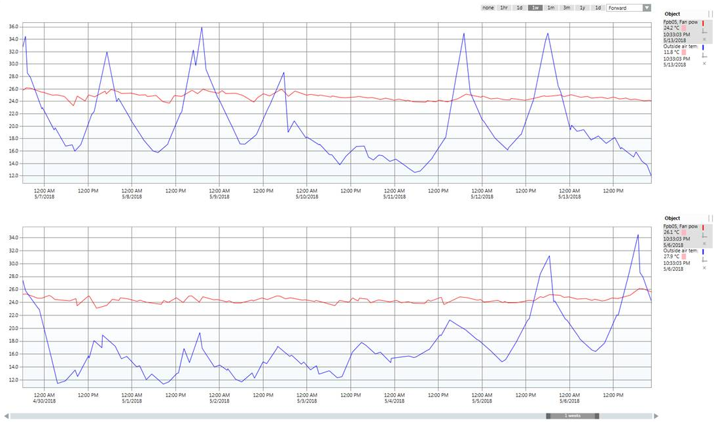
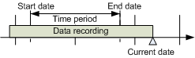
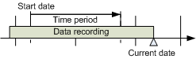
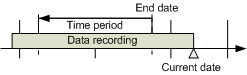
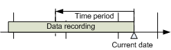
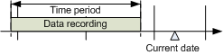
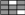

Analyzing Trend Data
Scenario: You can analyze the collected values by using a number of tools such as time range scrollbars, context menus with predefined times, absolute/related time entries or zoom functions.
- In System Browser, select Trend View Definition.
- Click for the desired Trend View Definition.
- The selected Trend View Definition opens.
- Continuing with the further workflows as needed.

Switching Between Run and Stop Mode
Scenario: Run mode normally is used to analyze trend data (continuous scrolling of the graphic curves). The latest data is automatically retrieved from the system. You can change to Manual mode for a detailed analysis (scrolling off). In this case, the data is no longer updated automatically.
- Click Stop
 .
. - This stops automatic data updates and suppresses the symbol to update Trend View.
- Define the desired date range using the slider or time bar.
- Click Refresh
 when the symbol is available and you want to upload the latest data from the History Database.
when the symbol is available and you want to upload the latest data from the History Database. - Click Run
 to update data on a continuous basis.
to update data on a continuous basis.
Selecting the Time Range Using the Time Range Scrollbar
Setting Time Range and Time Window
Scenario: You want to define the visible time range as well as the corresponding time window for a Trend View.
- In the Trend View, navigate to the left or right slider (dark grey area) of the time range slider.
- The shape of the mouse pointer changes
 and the tooltip displays.
and the tooltip displays. - Drag the Time Range slider to the left or right until you have reached the desired time range.
- The time range change continuously displays.
- The Trend View displays the selected time range.
- Navigate to the Time Range slider (light grey area).
- Drag it to the desired time/data range.
- The time range is displayed with the corresponding data period in the Trend View.
Repeat Functions
- Click the Time Range scrollbar to the left or right of the Time Range slider. The Time Range slider moves in the corresponding direction per the time range defined in the Time Range slider.
- Click the left or right arrow on the Time Range scrollbar. The Time Range slider moves in the corresponding direction at a 1:10 ratio for the selected time range.

NOTE:
Data is compressed for display purposes only if you select a large time range or very large number of measured values. All data is displayed for smaller time ranges.
Selecting Absolute Time Range
Scenario: You want to define the time window with a precise start and stop date.

- Right-click the Time Range bar.
- Click Select range.
- The Select Date/Time dialog box displays.
- From the Selection type drop-down list, select Absolute.
- Click the displayed Start time.
- The Calendar dialog box opens.
- Enter the desired start date in the Calendar dialog field.
- Select month and year with the

 symbols.
symbols. - Click the appropriate date.
- Click the displayed time at Start time and enter the desired start time.
- Click the displayed End time.
- The Calendar dialog box opens.
- Click the displayed time at End time and enter the desired end data in the Calendar dialog box.
- Select month and year with the symbols.
- Click the appropriate date.
- Click the displayed time at End time and enter the desired stop time.
- Click OK.
- The Select Date/Time dialog box closes and the Trend View displays the defined time range.
Selecting Relative Time Range from a Start Date
Scenario: You want to define a time window from a certain start date with a set time range.

- Right-click the Time Range bar.
- Click Select range.
- The Select Date/Time window displays.
- Select the Relative option in the Selection type drop-down list.
- In the Interval text field, enter a time range from 1 to X and select the corresponding time unit in the drop-down list.
- From the Start/end time drop-down list, select Starting.
- Click the displayed date and enter the desired start date in the Calendar dialog box.
- Select month and year with the symbols.
- Click the appropriate date.
- Click the displayed time and enter the desired start time.
- Click OK.
- The Select Date/Time dialog box closes and the Trend View displays the defined time range.
Selecting Relative Time Range from a Stop Date
Scenario: You want to define a time window from a certain end date with a set time range.

- Right-click the Time Range bar.
- Click Select range.
- The Select Date/Time window displays.
- From the Selection type drop-down list, select Relative.
- In the Interval text field, enter a time range from 1 to X and select the corresponding time unit in the drop-down list.
- From the Start/end time drop-down list, select Ending.
- Click the displayed date and enter the desired stop date in the Calendar dialog box.
- Select Month/Year with the symbols.
- Click the appropriate Date.
- Click the displayed time and enter the desired stop time.
- Click OK.
- The Select Date/Time dialog box closes and the Trend View displays the defined time range.
Selecting Relative Time Range from a Current Date
Scenario: You want to define a time window from the current date with a set time range.

- Right-click the Time Range bar.
- Click Select range.
- The Select Date/Time window displays.
- From the Selection type drop-down list, select Relative.
- In the Interval text field, enter a time range from 1 to X and select the corresponding time unit in the drop-down list.
- Select the Ending now option in the Start/end time drop-down list.
- Click Now.
- Click OK.
- The Select Date/Time dialog box closes and the Trend View displays the defined time range.
Selecting Time Range from Predefined Time Ranges
Scenario: Select the visible time range based on predefined time ranges.

Time range
- Move the mouse cursor to the Time Range slider (light grey area).
- Right-click the Time Range slider.
- Predefined time ranges display.
- Select the desired time range.
- The time range displays with the corresponding data period in the Trend View.
NOTE:
The display calculation is always based on current visible date range.
Depending on the position of the current Trend View, the starting point may not be at the start of the day.
Start/Stop Range
- You are in an active Trend View.
- In the Trend View, point the mouse to the left or right end point (dark grey area) for the Time Range slider.
- The mouse pointer changes shape and the tooltip displays.
- Right-click the Time Range slider.
- Predefined time ranges display.
- Select the desired time range.
- The time range displays with the corresponding data period in the Trend View. The display calculation is always based on current visible date range as displayed in the tooltip.
Using Compare View
Scenario: The compare view is ideal for extended data analysis with time offset.
- Click Stop .
- Close the Properties window.
- Click Compare View
 .
. - The same Trend View displays a second time.
- Define the appropriate time/date range with the scrollbar.
- Select time offset Forward or Backward.
- Do one of the following:
- Click one of the predefined offset buttons, for example 1 hour.
- Select your own range by selecting the dark button, for example, 3 hours, and select the time offset.
- Compare view displays with the corresponding time offset and measured values.
Selecting Table View
Scenario: Switching between graphic and table allows for efficiently analyzing data.
- Click Stop .
- Click Table view
 .
. - The table opens in default view. Click the time stamp header to sort the rows by ascending or descending order.
- Click

to show or hide interpolated values. - Interpolated values are displayed in light-grey.
- Click Table view again .
- The graphical Trend View re-displays.
- Click Run to start the automatic data update.
NOTE 1:
When you use Export in the table view, the exported data range depends on the time setting in the graphical view.
NOTE 2:
Interpolated values are not exported to an export file.
NOTE 3:
The priority displays in the table if the subsystem supports information on BACnet write priority (1-16).
Temporarily Highlighting Data Series
Scenario: During analysis, it is helpful to temporarily highlight a particular series of data in the Trend View to improve the readability of the trend curve.
- Drag the pointer to the trend curve you want to bring forth.
- All non-selected trend curves are reduced in their display intensity.
- The measured value, as well as time and date, are displayed in tooltip at the pointer position.
- The quality attribute is brought forwards only when one trend curve is visible.
- Drag the pointer to view all trend curves again.
Temporarily Hiding Data Series
Scenario: You can temporarily or permanently hide multiple series to increase the readability of the Trend View.
- Click Properties
 .
. - Select the series you want to hide in Legend.
- Click Series Properties.
- Clear the Visible check box.
- The series is hidden in the Trend View.
- The Trend data is still recorded for this series, but is no longer displayed.
NOTE:
As an alternative, you can click either or in the legend. This allows you to show or hide each individual trend curve.
Printing Data from Trends
- Select the time range to print using the time range scrollbar.
- Click Print
 .
. - Select or clear the Fit to page check box. Select the corresponding option in the toolbar if Fit to page is not selected.
- Define print properties for:
- Margins (top, bottom, left and right).
- Printer.
- Orientation (portrait or landscape).
- Paper size.
- Click Print and Close to print, or click Close.